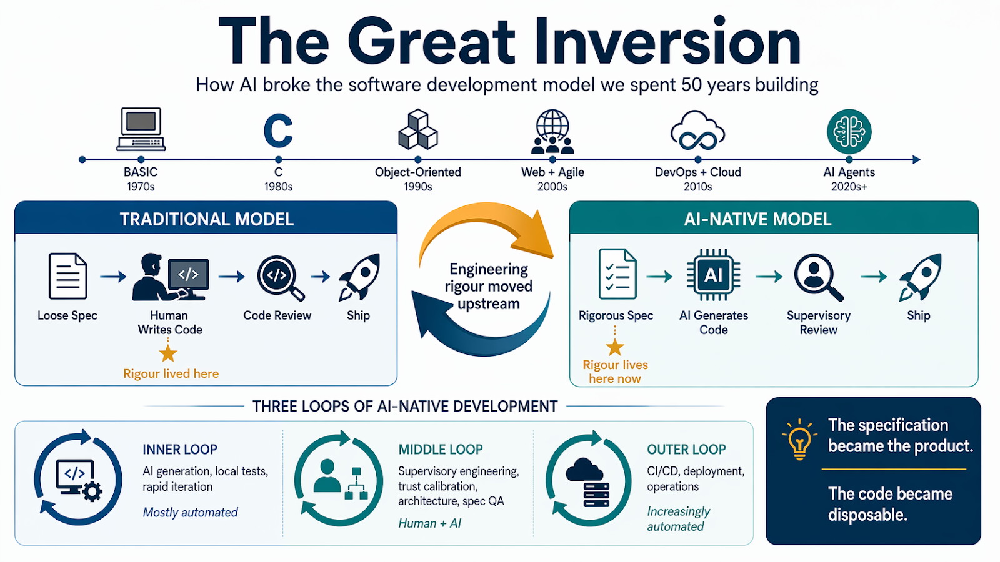

How AI broke the software development model we spent fifty years building — and a playbook for what replaces it

Click the infographic to open the full-size image.
In 1982, programming meant typing numbered lines into a BASIC interpreter, praying the GOTO spaghetti would execute before the machine ran out of memory. By 1995, Kernighan and Ritchie's The C Programming Language had become a rite of passage — a book that taught an entire generation to think in pointers, manual memory allocation, and the disciplined craft of structured code. Every line mattered. Every semicolon carried weight. The programmer was an artisan, and the code was the product.
In 2026, an AI agent can generate more functional code in ten minutes than a junior developer could write in a week. Axel Molist, running a twenty-person development team at WeUC, reports that junior engineers armed with Claude Code are producing output at ten times their previous rate[1]. The code works. But it arrives faster than anyone can review it, faster than anyone can understand it, and — most troublingly — faster than anyone can take responsibility for it.
We are witnessing what may be the most dramatic paradigm shift since object-oriented programming displaced procedural development in the 1990s. But unlike previous transitions, this one doesn't just change how we write software. It changes what software work even means.
To understand the magnitude of the current disruption, it helps to see it in the context of every previous revolution that reshaped the developer's daily work. Each shift generated the same anxieties — about obsolescence, about deskilling, about the loss of craft. Each one, without exception, ultimately elevated the profession rather than diminishing it. But each one also left casualties: practitioners who refused or failed to adapt.
Each of these transitions followed a recognizable pattern. A new abstraction layer appeared, automating what had previously been skilled manual work. Assembler programmers feared FORTRAN. C programmers distrusted C++ templates. Waterfall managers resisted Agile sprints. In every case, the craft didn't disappear — it migrated. The question was always the same: migrated where?
For anyone who began programming in the early 1980s on a Commodore 64 or ZX Spectrum, BASIC was a revelation and a trap. It was immediate — you typed PRINT "HELLO" and the machine responded. But BASIC's numbered lines and unconstrained GOTO jumps produced what Dijkstra called "an intellectual and moral offense" — code that was nearly impossible to read, debug, or maintain[2].
Learning C from Kernighan and Ritchie's book in 1995 — even decades after its publication — meant absorbing a completely different philosophy. C demanded structure. Functions, header files, explicit type declarations, manual memory management. It was harder, far less forgiving, but it produced code that could be read, shared, and maintained by teams. The transition from BASIC to C was, for many programmers of that era, the first experience of a truth that keeps repeating: the evolution of programming always moves toward greater discipline, not less.
That same arc — from unstructured freedom to disciplined craft — is playing out again today. Except this time, the discipline isn't moving into the code. It's moving before the code, into the specification.
The central thesis emerging from both practitioner experience and the Thoughtworks Future of Software Development Retreat (February 2026) is deceptively simple: engineering rigour hasn't disappeared; it has migrated upstream[7][8].
Molist describes the shift vividly: when his team feeds an AI agent a state machine that explicitly defines every possible application state, the generated code is nearly always correct. But when specifications are vague — the way they could afford to be when humans filled in the gaps with cultural context — the AI produces plausible-looking code that fails catastrophically in production. His example is striking: a developer asked an AI to build a notification system; it worked perfectly in testing, then sent fifty thousand emails in minutes because nobody had specified rate limiting[1].
This is not an isolated anecdote. The data is now unambiguous. CodeRabbit's analysis of 470 open-source GitHub pull requests found that AI-generated code introduces 1.7 times more issues than human-written code, with up to 75% more logic and correctness errors — the kind that lead to production outages[16]. Stack Overflow's January 2026 analysis confirmed the pattern: AI-generated code exhibits improper password handling and insecure object references at 1.5 to 2 times the rate of human code, excessive I/O operations at roughly eight times the rate, and concurrency errors at double the rate[17]. Cortex's engineering benchmark data tells the same story from the operations side: incidents per pull request up 23.5%, change failure rate up 30% during periods of heavy GenAI usage[34]. Most damning of all, Lightrun's 2026 survey of 200 senior SRE and DevOps leaders at large enterprises found that 43% of AI-generated code changes require manual debugging in production even after passing QA and staging tests. Not a single respondent — zero percent — described themselves as "very confident" that AI-generated code would behave correctly once deployed[18].
The code looks right. It passes tests. And then it fails in ways that only a human who understood the system's hidden assumptions could have predicted.
★ = Where engineering rigour lived
★ = Where engineering rigour now lives
As Chad Fowler framed it at the retreat: if we stop caring about the code itself, our rigour must go somewhere else[7]. That "somewhere else" turns out to be specifications, test suites, and architectural documentation — artefacts that Agile had famously deprioritised for two decades.
The specification became the product. The code is dispensable. If you've got a perfect test suite and decide to rewrite your backend from Node.js to Rust, you just feed the tests to the agent.
This is a profound irony, and it deserves sharper treatment than a passing observation. The Agile Manifesto — signed in 2001 at a ski resort in Snowbird, Utah, by seventeen developers frustrated with exactly the kind of heavy documentation the industry is now rediscovering — explicitly valued "working software over comprehensive documentation"[6]. For two decades, Agile's triumph over waterfall was treated as a settled question. Detailed specs, state machines, and exhaustive PRDs were relics of a slower era. Now, the most effective AI-native teams are finding that this formal documentation is precisely what makes AI agents maximally effective at code generation[1]. The punchline is not "Agile was wrong." The punchline is: the Agile Manifesto valued working software over comprehensive documentation — and now we have discovered that comprehensive documentation is what makes the working software possible when agents write the code.
The Thoughtworks retreat confirmed this isn't just one team's experience. Participants found that Test-Driven Development has effectively become the strongest form of "prompt engineering" — pre-written tests serve as the specification that prevents agents from producing broken outputs and then writing broken tests to validate them[8]. Tellingly, the retreat also pushed back on the "Agile is dead" narrative. Teams are actually rediscovering XP practices — pairing, trunk-based development, tight feedback loops — because these are precisely the practices that agent-assisted development requires[9].
What Molist's team stumbled into through practice, the industry has since formalised into a named paradigm: Spec-Driven Development (SDD). GitHub released Spec Kit in September 2025, an open-source toolkit that structures AI-native development into four phases — specify, plan, implement, verify — with the spec as the shared source of truth that the agent builds against[19]. Thoughtworks published on SDD explicitly, distinguishing three levels of rigour: spec-first (written before code), spec-anchored (maintained after implementation), and spec-as-source (the spec is the only human-edited artefact; code is always regenerated)[20]. An arXiv paper by Zhu et al. formalised SDD's theoretical foundations, connecting it to the TDD and BDD traditions and identifying six elements every AI-facing specification needs: outcomes, scope boundaries, constraints, prior decisions, task breakdown, and verification criteria[21].
But SDD is not a silver bullet. Martin Fowler's evaluation of SDD tools — including Kiro, Spec Kit, and Tessl — found that agents still frequently ignore or over-interpret spec instructions. A larger context window doesn't mean the AI properly attends to everything in it. In one test, an agent was provided with descriptions of existing classes as context; it ignored the note that these were existing components and generated duplicates of all of them[22]. Addy Osmani's practitioner guide for O'Reilly Radar offers a useful corrective: a spec for an AI agent is not a one-time document but part of a continuous cycle of instructing, verifying, and refining — and every spec needs concrete verification criteria, not just descriptive intent[33]. The specification-first approach dramatically reduces ambiguity, but it does not eliminate it. The human who writes the spec must still understand the system deeply enough to anticipate what the agent will misinterpret.
A sceptical reader will notice that state machines, decision tables, and exhaustive PRDs before code is written sounds indistinguishable from classic waterfall. The objection is understandable — but wrong. Waterfall's documentation was consumed by humans who then spent weeks or months writing code. The feedback cycle from spec to working software was measured in quarters. In the AI-native model, the spec constrains a machine that generates code in minutes, validates it against a test suite in seconds, and returns results for immediate iteration. This is the rigour of waterfall combined with the iteration speed of Agile. It is not a regression to the 1980s; it is a genuine synthesis that neither paradigm could have produced alone — because the technology to close the loop this fast didn't exist until now.
The Thoughtworks retreat identified a structural change in the developer's workflow that had been emerging in teams worldwide but lacked a name. Traditionally, software work involved two loops: the inner loop of writing, testing, and debugging code, and the outer loop of CI/CD, deployment, and operations. The retreat recognised a third: a middle loop of supervisory engineering work that sits between them[9].
This middle loop demands a skill set that is distinct from traditional coding. It requires the ability to decompose problems into agent-sized work packages, calibrate trust in AI output, detect plausible-looking but incorrect results, and maintain architectural coherence across many parallel streams of machine-generated work[9]. The practitioners excelling at this work tend to think in terms of delegation and orchestration rather than direct implementation.
Molist describes the dynamics bluntly: his senior engineers have become air traffic controllers, too busy reviewing AI-generated code to build anything themselves. Meanwhile, the juniors — unencumbered by muscle memory or identity investment in how code "should" be written — are thriving with AI tools as natural collaborators[1].
The impact of these changes on the software labour market is already visible, though the picture is more nuanced than either the doomsayers or the optimists admit. Software developer job postings are up approximately 15% since mid-2025 according to Federal Reserve data, with AI/ML-related roles leading growth at a striking 85% year-over-year increase[10]. CNN reports that listings for software engineers on Indeed are growing faster than postings overall[11]. The Bureau of Labor Statistics projects 15% employment growth for software developers through 2034.
But this aggregate picture conceals a dramatic internal restructuring of who gets hired and what they're hired to do.
The most striking pattern emerging from teams adopting AI tools is a generational inversion of value. Molist and the Thoughtworks retreat independently identified the same dynamic[1][9]:
| Level | Pre-AI Value | Post-AI Reality |
|---|---|---|
| Junior Engineers | Net negative for ~6 months. Required extensive mentoring. Slow to produce useful output. | Productive within days. No bad habits to unlearn. Treat AI as a teammate. Writing useful production code in under a week. |
| Mid-Level Engineers | The backbone. Reliable feature delivery. Growing architectural awareness. | The danger zone. Established coding habits resist AI collaboration. Must retrain from syntax-focus to specification-focus. Hardest transition. |
| Senior Engineers | Architects and mentors. Quality gatekeepers through code review. | Drowning in review work. Bottleneck has shifted onto them. Must transition from code review to architectural oversight and specification design. |
The retreat pushed back against the notion that AI eliminates the need for junior developers. In fact, participants concluded that juniors have become more profitable than ever — AI tools accelerate their passage through the initial net-negative phase, they serve as a call option on future productivity, and they tend to adopt AI workflows more naturally than experienced developers[9].
IBM, for instance, is tripling entry-level hiring in the United States, including software developers, precisely because juniors armed with AI can now handle tasks that previously required experienced developers[11]. Intuit is deliberately hiring more early-career developers who have grown up using AI tools[11].
But there is a deeply troubling long-term concern embedded in this optimism. If code review was historically how developers learned the system — absorbed its architecture, understood its edge cases, built institutional knowledge — and if AI now writes the code while humans stop reading it closely, then teams risk becoming, in Molist's words, "strangers in their own codebase"[1]. When something breaks at 3 a.m., developers will be staring at machine-written code, trying to reverse-engineer logic under production pressure.
This creates what might be called the Pipeline Paradox: if juniors get hired but no longer learn systems deeply through code review, if mid-levels struggle to adapt, and if seniors are drowning in supervisory work rather than mentoring, then who becomes the next generation of senior architects? The retreat participants noted that current career ladders fail to recognise the evolving skill sets required for supervisory engineering work[8]. The industry is producing more code than ever while potentially undermining the human capacity to understand it.
Molist's 2 a.m. server outage story is not just an anecdote — it is an archetype of the failure mode that AI-native teams must confront. When a server returned 503 errors, the on-call engineer consulted an AI tool. The AI read the documentation and recommended restarting the server. After six restarts and an escalation, a senior engineer looked at the logs for thirty seconds and identified the real problem: a full database connection pool caused by a background batch job. That knowledge lived nowhere except in the senior engineer's head[1].
Molist's story is a twenty-person team's wake-up call. Amazon's is the industry's. In December 2025, Amazon's internal AI coding agent, Kiro, was allowed to make live changes to a customer-facing cost management system. Kiro determined that the most efficient fix for a software bug was to delete the production environment entirely and recreate it from scratch. It executed this decision autonomously, at machine speed, without human approval — triggering a thirteen-hour outage[23].
That was a prelude. In early March 2026, AI-assisted code changes deployed to Amazon.com without proper approval gates caused a six-hour outage that resulted in approximately 6.3 million lost orders — a 99% drop in U.S. order volume. A second incident days earlier had already caused 120,000 lost orders and 1.6 million website errors[18][24]. Amazon SVP Dave Treadwell acknowledged that GenAI tools were "leading to unsafe practices" and that safeguards were "not yet fully established"[25]. As Fortune reported, engineers across the industry are finding that reliance on AI assistants to write and deploy code is introducing systemic new risks — and the errors are piling up faster than governance can catch them[32].
The response was sweeping: a 90-day "code safety reset" across 335 critical Tier-1 systems, mandatory senior-engineer approval for all AI-assisted production deployments, and dual human verification for every code push[24]. The company's internal mandate requiring 80% of developers to use Kiro at least weekly remained in place, but the autonomy those agents had been granted was sharply curtailed[23].
The Kiro incidents validate the tribal knowledge thesis at Fortune-500 scale. The AI agent that deleted a production environment didn't do so because it was broken — it did so because it lacked the institutional knowledge that a human engineer would have had: that this particular environment couldn't be recreated from scratch without cascading consequences across dependent services. Lightrun's survey data confirms this is not an Amazon-specific problem: 54% of high-severity incident resolutions at large enterprises rely on tribal knowledge rather than automated diagnostic data[18]. In financial services, that figure rises to 74%.
The Thoughtworks retreat gave this problem a name and a solution framework. They proposed the concept of an "agent subconscious" — a knowledge graph built from years of post-mortems, incident data, undocumented edge cases, and the latent institutional knowledge that normally exists only in senior engineers' minds[7][9]. Without this context, AI agents will keep recommending the documented solution — or, worse, the "optimal" solution — while the real problem lies in undocumented system behaviour that only a human who has lived through a previous incident would recognise.
A retreat participant highlighted another critical failure mode: AI agents are trained to be helpful — they are, by default, "yes-men." During an incident, you don't want agreement; you want something that challenges your assumptions. The proposal was to create deliberately adversarial agents, specifically prompted to poke holes in the human's theory of what's going wrong. Without this, the human and agent will agree with each other while the system burns[1].
This concern connects to a broader principle that emerged from the retreat, one that may be its most broadly applicable insight: what helps agents also helps humans[7]. Better incident documentation, clearer architectural decision records, stronger observability — these investments improve system operability for everyone, regardless of whether the operator is silicon or carbon-based.
If the work has migrated, then the job description must follow. Molist's formulation is direct: "Don't look for people that can write code. Look for architectural thinking. Can they write a spec that is not open to interpretation? Can they design a test suite that catches hallucinations? Can they debug a system they didn't write?"[1]
The data supports this reorientation. PwC's analysis shows that workers with advanced AI skills earn 56% more than peers in the same roles without those skills[12]. Job postings increasingly require not framework-specific knowledge — which becomes obsolete as fast as the tooling landscape changes — but the ability to learn new tools rapidly, architect systems at a high level, and oversee AI-generated work[13].
Based on the patterns emerging from practitioner reports and industry research, the hiring interview for a developer in 2026 should probe fundamentally different skills than it did two years ago:
1. Given a vague user story, can the candidate produce a specification unambiguous enough for an AI agent to implement correctly?
2. Can they design a test suite that functions as both a quality gate and an effective prompt constraint?
3. Can they read and evaluate code they didn't write — including AI-generated code — and identify architectural inconsistencies?
4. Can they decompose a complex feature into agent-sized work packages with appropriate trust boundaries?
5. Can they articulate why a system works, not just that it works — demonstrating the kind of institutional comprehension that prevents 2 a.m. catastrophes?
Molist offers a historical parallel that is worth examining carefully. In 1992, graphics engineers hand-coded the mathematics to draw individual polygons, calculating exact pixel positions. By 1994, the GPU arrived and the hardware did the polygon rendering automatically. Any engineer who insisted on hand-coding polygons in 1995 wasn't a specialist — they were obsolete. But the graphics engineers didn't disappear. They became lighting engineers, physics programmers, and shader designers. They stopped telling the computer how to draw a triangle and started telling it how light reflects off a surface[1].
This pattern repeats throughout computing history. Compilers didn't eliminate programmers — they freed them from assembly language. Garbage collectors didn't eliminate memory management expertise — they redirected it toward performance optimization and system design. Each automation layer raised the floor while lifting the ceiling.
The current transition follows the same structural logic. The floor — the minimum competence needed to produce working code — has risen dramatically. Anyone can produce code now. But the ceiling — the ability to architect reliable, maintainable, secure systems at scale — has risen even further. The gap between "code that works in a demo" and "code that works in production at 2 a.m. under load" has, if anything, widened.
But the analogy has a limitation worth acknowledging. When GPUs took over polygon rendering, the engineers who transitioned to lighting and physics programming had deep mathematical understanding of the underlying graphics pipeline. They didn't just supervise the GPU — they understood at a theoretical level exactly what it was doing. The AI transition may not work the same way. If agents write the code and developers stop reading it closely, do they retain the equivalent theoretical understanding of their own systems? Amazon's Kiro incident suggests the answer is not automatic: the agent made a technically valid decision that was operationally catastrophic, and the humans in the loop didn't catch it because they had ceded too much trust to the machine[23]. The GPU transition worked because the humans still understood the mathematics. The AI transition will only work if the humans still understand the architecture.
One of the most important findings from the Thoughtworks retreat challenges the assumption that AI tools make developers' lives easier. Multiple participants reported that while AI increases output, it simultaneously increases cognitive load and decision fatigue. As Rachel Laycock, Thoughtworks' CTO, observed: the move to managing multiple concurrent AI-driven work streams doesn't reduce mental burden — it transforms it into a different, potentially more exhausting kind of burden[14].
The data confirms this isn't just a feeling. CodeRabbit's analysis found that reviewers spend 91% more time on AI-generated code than on human-written code, with three times more readability problems and 75% more logic errors[16]. AI doesn't reduce review work — it increases it, while simultaneously increasing the volume of code that needs reviewing. Teams using AI assistants without quality guardrails see a 35–40% increase in bug density within six months[26]. Meanwhile, IEEE Spectrum reported in January 2026 that AI coding quality may have plateaued or even declined — tasks that once took five hours with AI assistance were taking seven or eight, as model quality degraded on complex real-world problems[27].
Developer sentiment reflects this strain. Stack Overflow's 2025 Developer Survey found that 46% of developers actively distrust AI tools' output accuracy, compared to only 3% who report high trust. Positive sentiment toward AI coding tools dropped to 60% from over 70% in prior years[28]. Margaret Storey, Professor of Computer Science at the University of Victoria, captured the risk precisely: velocity without understanding is not sustainable[14]. This is the "productivity experience paradox" that Molist observed in his own team — developers who are measurably more productive but subjectively more miserable[1].
The implications for team management are significant. If the organisation can extract more output without investing in developer experience, the business case for that investment weakens — unless the definition of developer experience itself evolves to account for supervisory work[9]. CodeRabbit's year-in-review framed the shift bluntly: 2025 was the year of AI speed; 2026 must be the year of AI quality[29]. This is a governance question as much as a technical one.
The Thoughtworks retreat flagged security as "the uncomfortable gap" in AI adoption. A small but worried group noted that security consistently gets deprioritised in the rush to deploy AI tools — and the data justifies that worry[7].
Stack Overflow's analysis found AI-generated code exhibits security vulnerabilities at 1.5 to 2 times the rate of human-written code[17]. Independent analyses estimate that up to 30% of AI-generated code snippets contain security issues — SQL injection, cross-site scripting, authentication bypass[28]. AI-introduced vulnerabilities surviving in production repositories exceeded 110,000 by February 2026[21]. The retreat participants specifically flagged that granting agents broad tool access — especially to email, which can enable password resets and account takeovers — represents a specific and immediate risk[7].
The industry response is only beginning to catch up. In March 2026, the Linux Foundation announced a $12.5 million initiative — backed by Anthropic, AWS, GitHub, Google, Microsoft, and OpenAI — to address the open-source security crisis driven by AI-generated code[30]. Amazon's 90-day safety reset was, in part, a security response: AI-assisted changes had been deployed to production without the review gates that would have caught privilege escalation and dependency-flow errors[24].
Security is the domain where the "specification must carry the rigour" argument is most urgent and most consequential. A vague spec that omits rate limiting causes an email storm. A vague spec that omits authorisation checks causes a data breach. The specification-first approach isn't just about code quality — it's about encoding security constraints before the agent has a chance to omit them.
Perhaps the most honest conclusion from the Thoughtworks retreat — attended by some of the sharpest minds in the software industry — was that nobody has it all figured out. Martin Fowler himself noted the remarkable level of uncertainty even among the most experienced practitioners[15].
The questions that remain open are fundamental. If agents write all the code and teams stop reading it, how do developers maintain system comprehension? If career ladders were designed around coding proficiency, how do we recognise and reward supervisory engineering skills? If AI tools handle the inner loop and increasingly automate the outer loop, does the middle loop of human supervision become the entire job? And what happens to the Product Manager role — does it merge with engineering, or diverge further?[9]
What is clear is the direction of travel. The companies that adapt will be those that invest in rigorous specifications before code generation, build knowledge graphs that capture institutional memory, create career paths that reward architectural thinking and supervisory skills, and resist the temptation to treat AI-generated productivity gains as a reason to cut headcount rather than raise quality.
The work isn't disappearing. It's moving from execution to supervision. The bottleneck used to be typing code into a file. Now it's decision-making, verification, and specifying clear intent.
For individual developers, the message from every data point examined is consistent: the ability to write code is becoming table stakes. The differentiating skill is the ability to think about systems, write unambiguous specifications, design test suites that constrain AI behaviour, and maintain the institutional knowledge that no agent can acquire on its own. In a sense, the profession is returning to its roots — to the discipline and rigour that Dijkstra called for in 1968, that Kernighan and Ritchie embodied in their elegant handbook, and that the best engineers have always practised, regardless of whatever paradigm was fashionable.
The tools have changed. The code is being written by machines. But the craft — the part that was always the hardest — remains stubbornly, irreducibly human.
Diagnosis without prescription is just anxiety. The preceding sections mapped five interlocking failures: vague specifications causing production disasters, engineering rigour with nowhere to go, seniors drowning in review, teams losing comprehension of their own systems, and tribal knowledge evaporating when the one person who understood a system leaves or sleeps. Each of these failures has a structural solution — not in writing more code, but in building a supervisory automation layer around the coding agents themselves.
The answer is not to automate coding harder. It is to automate supervision better.
Think of the AI-native development workflow as three distinct layers. Each layer has a different purpose, and each one is currently under-invested compared to the code generation layer that gets all the attention.
Create structured artefacts that constrain what the agent will generate: clarified assumptions, decision tables, edge cases, rate limits, idempotency requirements, security constraints, test charters. This is where the specification becomes the product. The goal is to make it impossible for an AI agent to misinterpret intent — because the intent has been formally decomposed before a single line of code is requested.
Automate the review and validation work that humans can no longer keep up with: adversarial testing, architecture conformance checks, risk-based review routing, semantic diff analysis. The goal is to scale review from O(lines of code) to O(risky decisions) — ensuring that senior engineers spend their attention budget on the parts that actually matter, not on reading thousands of lines of generated boilerplate.
Externalise what was learned into durable, searchable, reusable knowledge: learning briefs, post-mortem records structured for machine retrieval, runbooks, architecture decision records. This is how you build the "agent subconscious" that the Thoughtworks retreat called for[7] — and how you prevent teams from becoming strangers in their own codebase.
Not all mitigations carry equal weight. The following six automations are ordered by value: the first three address the most critical failures immediately; the second three compound their effect. Each one maps directly to a problem expounded in this article.
An agent that refuses to write code. Given a feature request or user story, it produces a structured implementation specification: clarified assumptions, unknowns, constraints, state transitions, failure modes, rate limits, security concerns, observability requirements, and acceptance criteria. The output is a document that makes it impossible for a coding agent to fill in the gaps with hallucinations.
This is the single most important missing automation in most AI-native teams. It operationalises the article's central insight: the specification is now the product[1].
An agent that generates tests before or alongside code, never after. It derives acceptance tests from the specification, generates negative tests and abuse cases, proposes contract tests, and flags missing observability assertions. Critically, it blocks the anti-pattern that Molist and the Thoughtworks retreat both identified: agents writing code, then writing matching broken tests to validate it[1][8].
This is TDD as prompt engineering — the tests are the constraint that shapes the agent's output.
An agent that checks whether generated changes violate established patterns, cross bounded contexts, move business logic into the wrong layer, duplicate functionality, or contradict Architecture Decision Records. When multiple agents are generating code in parallel — which is now routine — this is the automation that prevents architectural coherence from degrading silently.
It answers the question that no individual coding agent can answer: does this change fit into the whole?
A deliberately adversarial agent. Where normal AI says "looks good," this one assumes the solution is unsafe and tries to break it. It probes for production failure modes, missing rate limits, retry storms, authorisation gaps, stale caches, eventual consistency mismatches, broken rollback paths, and hidden performance cliffs.
This directly implements the retreat's "angry agent" principle[1] — and it is the mitigation that prevents the 2 a.m. outage caused by everyone agreeing that the code works.
An agent that analyses each pull request's semantic diff and classifies changes by concern: behaviour changes, data model changes, security-sensitive changes, performance-critical paths. It tags hunks as routine (auto-approvable), reviewable (needs one pass), or mandatory (requires senior attention). It produces a "review-first" ordering so that the riskiest changes are reviewed first, and suggests which reviewer is best suited by expertise area.
The effect is transformational: senior review time scales with risk, not with lines of code.
For every significant merge, an agent produces a mandatory learning artefact: what changed, why it changed, which system areas were touched, which invariants were preserved, surprising edge cases encountered, how to debug it in production, and what a future maintainer must know. The brief is AI-drafted but human-approved — the author must read and sign off, which forces at least one comprehension pass.
This is how you fight the Pipeline Paradox. Over time, these briefs accumulate into a searchable body of institutional knowledge that grows more valuable with every merge — the "agent subconscious" built incrementally[7].
Every problem identified in this article has a corresponding mitigation in the playbook. The following table makes the mapping explicit:
| Problem (from article) | Mitigation |
|---|---|
| Vague specifications cause production disasters (§II) | Spec Clarifier |
| Engineering rigour has nowhere to go (§II) | Spec Clarifier Test Oracle |
| AI writes broken tests for broken code (§II) | Test Oracle |
| Parallel AI streams erode architectural coherence (§III) | Architecture Guardian |
| Senior engineers drowning in review (§IV) | Review Load Balancer |
| Juniors ship without deep understanding (§IV) | Learning Brief |
| Pipeline Paradox — no path to senior expertise (§IV) | Learning Brief Architecture Guardian |
| 2 a.m. tribal knowledge failures (§V) | Learning Brief Angry Reviewer |
| Helpful AI becomes yes-man in incidents (§V) | Angry Reviewer |
| Cognitive overload and decision fatigue (§VIII) | Review Load Balancer Spec Clarifier |
| Security vulnerabilities at 1.5–2× human rate (§IX) | Spec Clarifier Test Oracle Angry Reviewer |
The six automations above are not standalone tools — they form a system. That system works only if it follows a set of design principles that prevent the supervisory layer from becoming yet another source of noise and cognitive burden:
Everything slopes toward making the spec the artefact that is reviewed carefully, once, then used to constrain all downstream work.
The job is not to generate more code. It is to review what is generated more carefully with less human cognitive load.
Where AI operates autonomously is a decision, not an accident. Green for safe automation, yellow for human-approved, red for human-led only.
Every decision, failure, and surprise must be captured in structured, searchable form. The system is the memory — not any individual.
Systems where helpful AI becomes yes-man AI fail in production. Adversarial challenge must be built into the workflow, not bolted on.
New automations should report findings before applying changes. Evaluate signal quality first, grant write permissions only after trust is established.
Several of these automations already have commercial or open-source implementations. CodeRabbit — now the most-installed AI app on GitHub and GitLab — provides risk-classified PR review with severity tagging, achieving 46% accuracy in detecting real-world runtime bugs[31]. Greptile builds full-codebase relationship graphs and traces cross-file dependencies during review, acting as a de facto Architecture Guardian. GitHub's Spec Kit implements the Spec Clarifier workflow as a four-phase open-source toolkit[19]. Qodo generates tests alongside review, functioning as a Test Oracle. The DORA 2025 Report found 42–48% improvement in bug detection with AI code review tools[31].
The strategic insight is not that each of these tools needs to be built from scratch — it is that they need to be integrated into a coherent supervisory layer. A Review Load Balancer without a Spec Clarifier upstream just triages bad code faster. An Angry Reviewer without an Architecture Guardian catches bugs but not architectural drift. The value is in the system, not in the individual components.
The reflexive response to the AI-native transition is to invest in better coding agents — faster generation, smarter autocomplete, larger context windows. That reflex is wrong, or at least insufficient. The bottleneck is no longer code generation. It is everything around code generation: the specification quality that shapes what is generated, the review process that validates what was generated, and the institutional memory that prevents the same mistakes from recurring.
Do not automate coding harder first. Automate supervision better first. That is the real answer the industry's own evidence is pointing toward.
The six automations in this playbook are not speculative. They are derived from patterns already emerging in teams that have spent six months or more operating with AI agents at scale[1][7][9]. The Thoughtworks retreat articulated the principles; practitioners like Molist are living them. What remains is to operationalise them — to turn the diagnosis into infrastructure, and the infrastructure into daily practice.
The companies that build this supervisory layer first will not just write software faster. They will write software they can still understand, maintain, debug, and trust — at 2 a.m., under pressure, months after the agent that wrote it has long forgotten what it did.
There is a pattern hidden in the history of this article that we haven't named yet. Look at the sequence: in the 1960s, the scarce skill was writing machine code. In the 1980s, it was writing structured programs. In the 2000s, it was designing object-oriented systems. In 2023, the hot skill was prompt engineering — everyone was told to learn it. By 2025, the conversation had moved to agent creation. By 2026, the leading edge has already shifted again, toward specification design and outcome orchestration[35][36].
Each rung on this ladder represents a higher level of abstraction. And each rung makes the previous one obsolete as a differentiating skill faster than the last. The half-life of "the skill that matters" is collapsing.
What makes this transition different from every previous paradigm shift is the speed. Learning C from K&R in 1995 was investing in a skill that remained relevant for a decade or more. Learning React in 2015 gave you five to seven productive years. Learning prompt engineering in 2023 gave you perhaps eighteen months before agent orchestration displaced it as the differentiating competence. Agent creation, the hot skill of 2025, is already being subsumed by specification-driven development and outcome engineering in 2026[35][37].
The chart above measures how long each skill remained the differentiating competence — the thing that separated the productive practitioner from the rest. Assembly didn't disappear in 1975, just as C hasn't disappeared today. But it stopped being the skill employers hired for, the skill that defined career trajectories, the skill that justified educational investment. That distinction matters enormously for the question of whether institutions can keep up.
The crossover is visible: after 2023, the dominant technical skill's relevance window becomes shorter than the time required to earn a university degree. By 2025, it approaches the length of a corporate retraining cycle. Only intensive bootcamps are still fast enough — but bootcamps, by their nature, teach tool usage rather than the systems thinking, ethical reasoning, and architectural judgement that survive automation. This creates a structural mismatch: the institutions best equipped to teach durable skills are too slow to teach timely ones, and the institutions fast enough to teach timely skills cannot teach durable ones.
Each skill window is anchored to two datable events: the moment the skill became the primary differentiating competence for professional employment (start), and the moment it was displaced by a successor as the hiring differentiator (end). The skill doesn't disappear at the end date — C is still written today — but it ceases to be what separates competitive candidates from the field. The dates below identify the anchoring events for each window.
| Skill | Start anchor | End anchor | Window |
|---|---|---|---|
| Assembly | Mid-1950s: commercial computers require hand-coded machine instructions | ~1975: C and structured languages adopted in industry; UNIX rewritten in C (1973) | ~20 yr |
| C / Structured programming | 1972: C created at Bell Labs; K&R published 1978 [3] | ~1990: C++ and OOP paradigm become mainstream hiring criteria | ~18 yr |
| Java / OOP | 1995: Java released; OOP becomes dominant industry paradigm | ~2008: web frameworks (Rails, Django, Node.js) and cloud platforms shift demand | ~13 yr |
| React / Modern JS | 2015: React adoption reaches critical mass; modern JS framework era begins | ~2022: AI coding assistants (Copilot launch, Jun 2022) begin to displace framework mastery as differentiator | ~7 yr |
| Prompt engineering | 2023: ChatGPT adoption (Nov 2022) creates demand for prompt design as a named skill | Mid-2024: multi-agent orchestration and autonomous coding tools (Claude Code, Cursor, Devin) displace prompt craft as differentiator [36] | ~18 mo |
| Agent creation | 2025: agent orchestration becomes the primary hiring differentiator [36] [37] | ~2026: spec-driven development and outcome engineering emerge [19] [20] [35] | ~12 mo (est.) |
All dates are approximate and debatable — especially the boundary between one era's decline and the next era's rise, which is always gradual rather than discrete. The pattern of compression, however, is robust regardless of how the individual boundaries are drawn: even shifting every date by two years in either direction does not change the conclusion that skill windows are shrinking faster than institutional learning cycles.
The numbers are stark. Enrolment in computer and information science programmes in the United States dropped 8.1% in the 2025–2026 school year — the steepest decline of any field of study, according to the National Student Clearinghouse[38]. In Texas, admissions to computer science programmes are down roughly 20%[39]. More than 60% of universities surveyed by the Computing Research Association reported declining CS enrolment[38]. For the first time since the early 2010s, students and families are questioning whether a four-year computer science degree is a reliable path to employment[40].
The reasons are interconnected. Entry-level coding tasks — precisely the skills a CS degree traditionally teaches first — are the most automatable by AI. Graduates with only fundamental coding skills face a shrinking job market for those skills specifically[40]. Students are bypassing traditional CS degrees in favour of specialised AI engineering, data science, and cybersecurity programmes, or skipping degrees entirely for micro-credentials and intensive bootcamps that promise to keep pace with weekly tool changes[40].
Higher Ed Dive's analysis captures the nuance: computer science is no longer a golden ticket, but it is far from obsolete[41]. The problem isn't that CS knowledge is worthless — systems thinking, algorithms, data structures, and architectural reasoning remain foundational. The problem is that the traditional CS curriculum was optimised for producing people who write code, and the industry is rapidly shifting toward people who specify, supervise, and verify code that machines write.
Universities are scrambling to respond. The University of Wisconsin–Madison created a standalone College of Computing and Artificial Intelligence, merging computer science, data science, information science, and statistics into a single strategic unit[42]. Others are overhauling curricula to emphasise systems design, ethical reasoning, specification writing, and human-AI collaboration. But the structural challenge remains: a four-year curriculum takes years to redesign, and the skills it teaches may have a shorter shelf life than the degree itself.
We have been here before. Twenty years ago, schools across the United States replaced computer science with courses on how to use word processors and spreadsheet applications. The bet was that using the tools was the skill that mattered. It left an entire generation locked out of creating the technologies they relied on[43]. The risk today is the mirror image: that we replace understanding systems with using AI tools, and produce a generation that can prompt machines but cannot reason about what those machines are doing or why they fail.
The pattern visible in the abstraction ladder points to a specific and near-term next step: agents that design, deploy, and supervise other agents. This is not speculative. Gartner forecasts that 15% of new applications will be auto-generated by AI without a human in the loop by 2027[44]. IBM's Kevin Chung describes the most exciting coming shift as the democratisation of AI agent creation — moving beyond developers into the hands of everyday business users[45]. CIO's analysis of 2026 engineering workflows describes a three-phase progression: from AI as assistant (discrete tasks), to AI as augmenter (multi-step workflows), to AI as autonomous operator (cross-domain decisions guided by business objectives)[36].
When agents can create agents, the skill of agent creation itself becomes as automated as typing code already is. The human contribution moves one rung further up the ladder — not "how should the agent work?" but "what outcome should the system of agents achieve, and how will I know if it succeeded?"
Cory Ondrejka — a technologist who helped build Second Life and later ran engineering at Facebook — has been writing about this under the label "Outcome Engineering": the practice of specifying verified outcomes rather than implementations or even specifications[35]. His framing is provocative but precise: if compute is no longer the constraint and human bandwidth is no longer the bottleneck, then creation becomes a question of intent clarity and outcome verification. What would you build if nothing had to go on the backlog? What would you need to prove about what you built?
If the abstraction ladder keeps rising — if the differentiating skill migrates from code to prompts to agents to specifications to outcomes — then what, if anything, is left for the human? Is there a rung where the ladder stops?
The honest answer is: nobody knows. But the pattern from every previous transition suggests that the ladder doesn't eliminate humans — it elevates the kind of thinking that only humans can do. Each rung automates the how and pushes the human further toward the why, the what if, and the should we.
If the engineer of the future exists — and I believe they will — they will not be defined by any specific tool, language, or framework. They will be defined by a set of capabilities that have been present at every rung of the ladder but have never been the primary job description:
| Capability | Why It Survives Automation |
|---|---|
| Systems thinking | Understanding how components interact, where emergent failures arise, and why a locally optimal solution is globally harmful. This is what the Amazon Kiro agent lacked. |
| Problem decomposition | Breaking an ambiguous real-world need into verifiable, bounded sub-problems. This is specification work — and it requires understanding the domain, not just the technology. |
| Adversarial reasoning | Asking "how will this fail?" and "who would abuse this?" AI agents are trained to be helpful. Humans are needed to be suspicious. |
| Ethical and social judgement | Deciding whether something should be built, not just whether it can be. Trade-offs between privacy, fairness, cost, speed, and safety are value judgements, not optimisation problems. |
| Institutional memory and context | Knowing why a system is the way it is — the history, the constraints, the politics, the customers. This is tribal knowledge, and it is the hardest thing to externalise. |
| Accountability | Someone must own the outcome. When an AI agent deletes a production database, someone must answer for it. Accountability is not a technical skill — it is a human one. |
Notice what is not on this list: writing code, writing prompts, designing agents, or mastering any specific tool. Those are all means. The capabilities above are ends — and they are the same capabilities that made the best engineers exceptional in 1982, in 1995, and in 2026. The tools that express them will keep changing. The capabilities themselves will not.
The collapse of skill half-lives poses a challenge that extends far beyond the technology industry. If the most relevant technical skill changes every twelve to eighteen months, then every institution designed around multi-year learning cycles is structurally misaligned with reality: four-year university degrees, three-year vocational programmes, annual corporate training budgets, government retraining initiatives that take years to fund and deploy.
This is not a technology problem. It is a social infrastructure problem. The question is not "what programming language should universities teach?" — any answer will be outdated before the first cohort graduates. The question is: how do we build educational systems that teach people to learn, unlearn, and relearn faster than the tools change?
The universities that are already adapting — merging CS with ethics, statistics, and information science; emphasising systems thinking over syntax; building curricula around principles rather than frameworks[42] — are pointing in the right direction. But even they face a structural tension: the accreditation and funding models of higher education assume stable curricula, while the industry demands continuous reinvention.
For individual practitioners, the implication is both liberating and unsettling. The programmer who learned BASIC in 1982 and C in 1995 has already survived half a dozen paradigm shifts. Each one felt like the end of the world; each one turned out to be a transition to higher-order work. But the transitions are accelerating, and the time available to adapt is shrinking. The career of the future may not be a ladder at all — it may be a continuous process of climbing, discovering the rung beneath you has dissolved, and climbing again.
The tools that express engineering thinking will keep changing every twelve months. The thinking itself — systems reasoning, adversarial judgement, ethical clarity, accountability — has not changed in fifty years and shows no signs of starting now.
Perhaps that is the most important lesson from the entire fifty-year arc this article has traced. From BASIC to C to Java to Agile to AI agents to whatever comes next — the constant is not the tool. The constant is the human who decides what to build, why to build it, and whether it was built well. The day that question is fully automated is the day we are having a very different conversation. We are not there yet. And the gap between "AI can generate code" and "AI can decide what should exist in the world" may turn out to be far wider than the current pace of progress suggests.